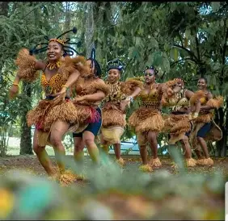

Le Gabon
Le Gabon est un pays d’Afrique centrale marqué par la diversité de ses peuples et de ses traditions. Plus de quarante ethnies y cohabitent, chacune apportant ses langues, ses rites et son savoir-faire.
La richesse culturelle gabonaise se reflète dans ses masques, ses chants, sa gastronomie et ses pratiques spirituelles comme le Bwiti. Cet héritage vivant fait du Gabon un pays où l’identité se construit dans le respect des ancêtres et la force de la communauté.
1. Situation géographique
Le Gabon est un pays situé en Afrique centrale, bordé par l’océan Atlantique à l’ouest, le Cameroun et la Guinée équatoriale au nord, ainsi que la République du Congo à l’est et au sud. Sa superficie est d’environ 270 000 km². Le territoire gabonais est caractérisé par une grande diversité de paysages : forêts tropicales denses couvrant plus de 80 % du pays, savanes, montagnes, et un littoral riche en mangroves et plages. Le climat est équatorial, avec deux saisons des pluies.
2. Population
Sur le plan démographique, le Gabon compte environ 2 millions d’habitants, relativement jeune et majoritairement urbaine. Libreville, la capitale, rassemble près de la moitié des habitants. Le Gabon est marqué par plus de 40 groupes ethniques : Fang, Punu, Nzebi, Myéné, Obamba, Téké, etc. Le français est la langue officielle, mais de nombreuses langues locales restent vivantes.
3. Culture
La spiritualité traditionnelle reste profondément ancrée dans la vie quotidienne. Elle repose sur la relation avec les ancêtres, les esprits et la nature. Les rites comme le Bwiti, qui utilise la plante sacrée iboga, ainsi que les danses et masques rituels, sont autant de moyens pour les Gabonais de maintenir un lien vivant avec leur histoire et leur culture.
Dans le même temps, la lumière du christianisme éclaire les chemins des Gabonais. Mais cette lumière ne doit pas éclipser les racines profondes qui s’enfoncent dans le sol bantou, riche d’une culture millénaire.
